SPL-DASH-001 · Rozdělený dashboard
Každý výřez je samostatný obrázek bez dodatečných popisků uvnitř. Podrobný popis pro Codex je v specifikaci.
Celá obrazovka
Soubor: assets/00-full-dashboard.png · viz popis komponenty v MD.
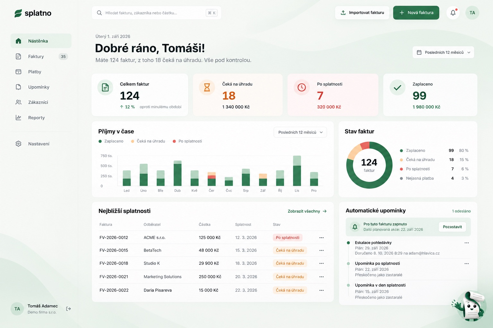
Navigace
Soubor: assets/01-sidebar.png · viz popis komponenty v MD.
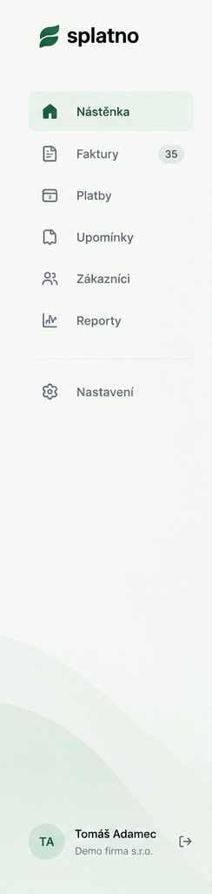
Horní lišta
Soubor: assets/02-topbar.png · viz popis komponenty v MD.
Hlavička a období
Soubor: assets/03-page-heading.png · viz popis komponenty v MD.
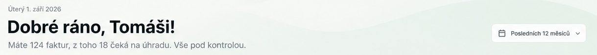
KPI – počet faktur
Soubor: assets/04-kpi-invoices.png · viz popis komponenty v MD.
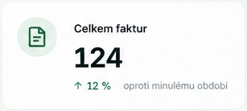
KPI – čeká na úhradu
Soubor: assets/05-kpi-awaiting.png · viz popis komponenty v MD.
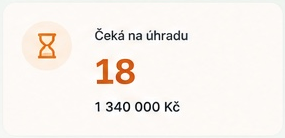
KPI – po splatnosti
Soubor: assets/06-kpi-overdue.png · viz popis komponenty v MD.
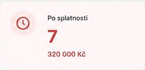
KPI – zaplaceno
Soubor: assets/07-kpi-paid.png · viz popis komponenty v MD.
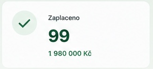
Příjmy v čase
Soubor: assets/08-chart.png · viz popis komponenty v MD.
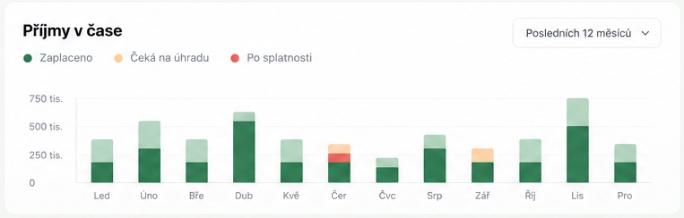
Stav faktur
Soubor: assets/09-donut.png · viz popis komponenty v MD.
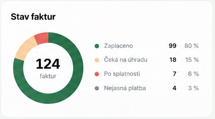
Nejbližší splatnosti
Soubor: assets/10-invoices-list.png · viz popis komponenty v MD.
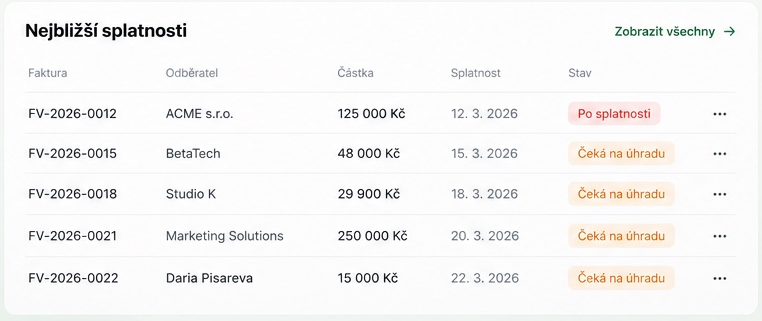
Automatické upomínky
Soubor: assets/11-reminders.png · viz popis komponenty v MD.
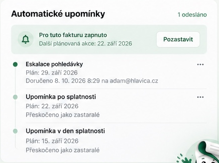
Profil
Soubor: assets/12-profile.png · viz popis komponenty v MD.
Esko
Soubor: assets/13-esko.png · viz popis komponenty v MD.